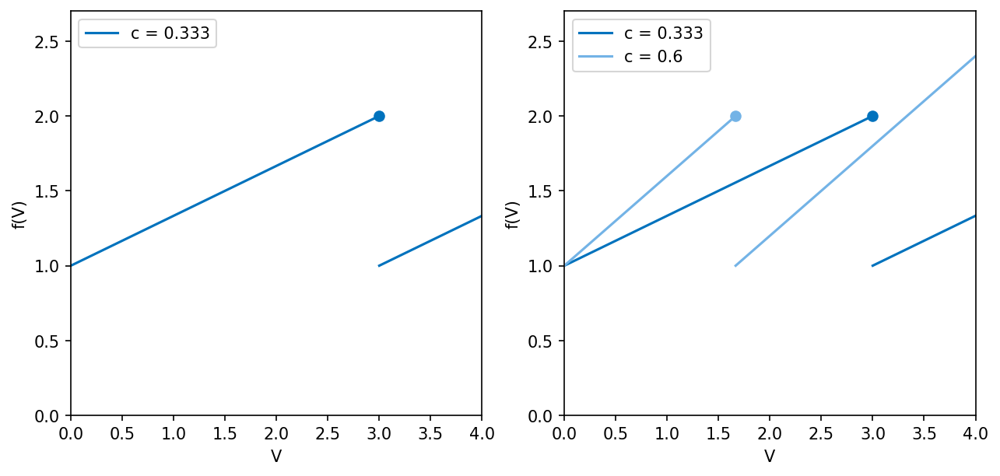
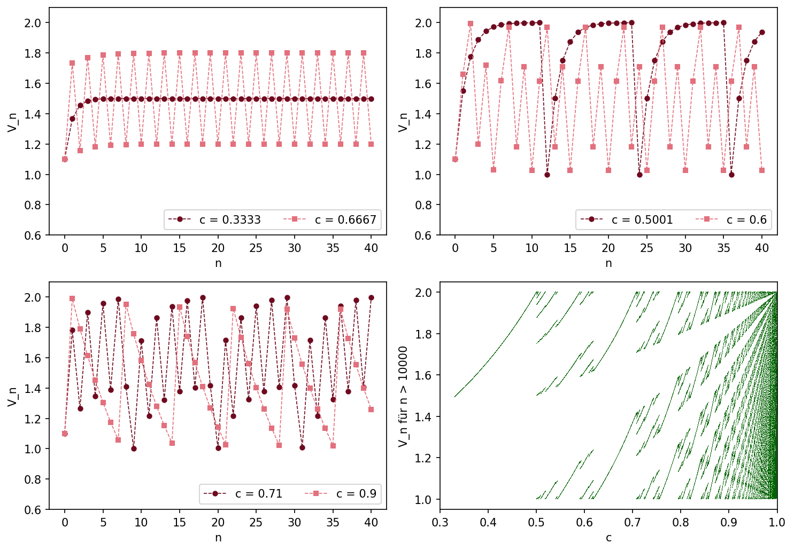
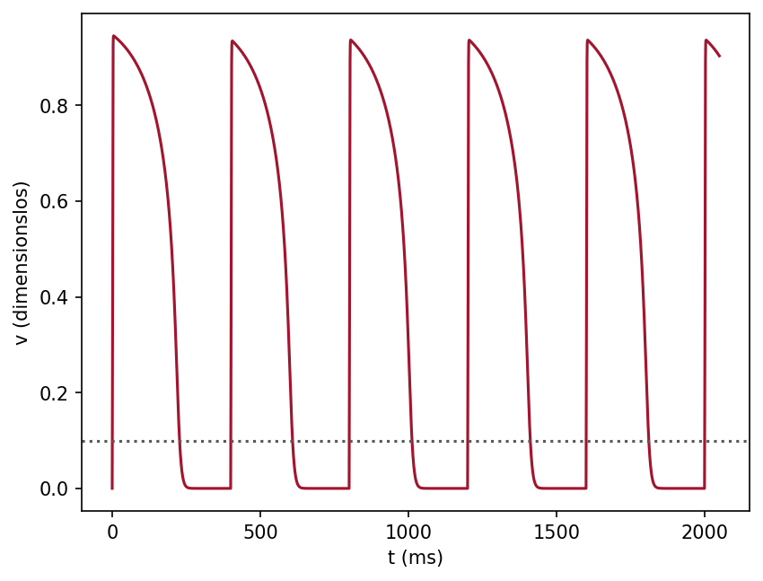
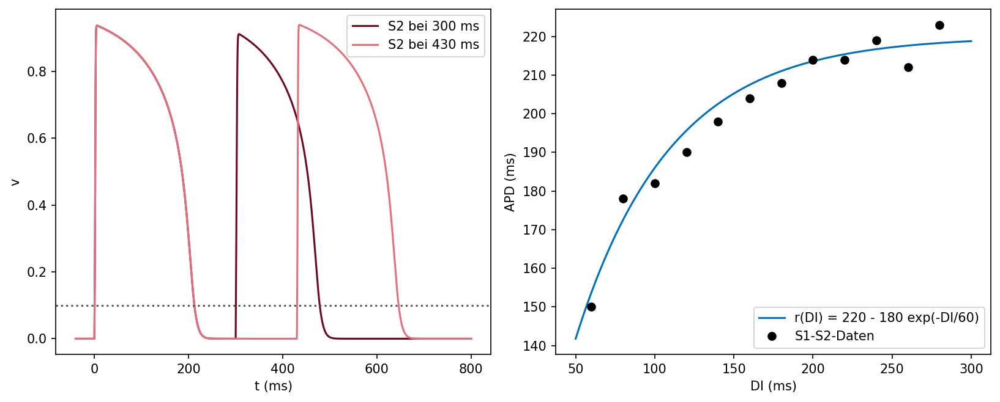
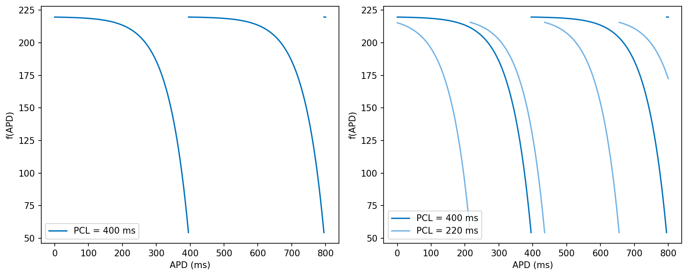
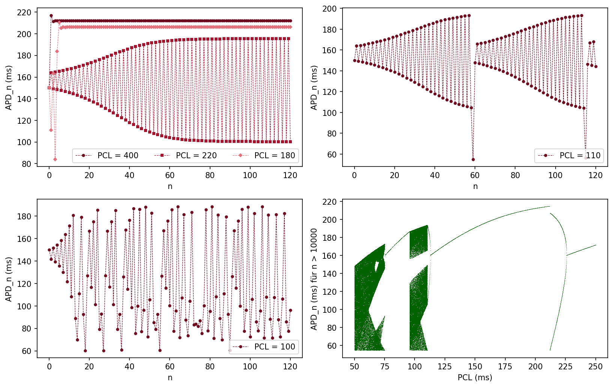

Kapitel 1 · Diskrete dynamische Systeme mit einer Variablen
1.6Vertiefung: Herzmodelle
Zwei einfache Differenzengleichungen beschreiben Herzrhythmen Schlag für Schlag: die Weiterleitung im AV-Knoten und die Dauer der Aktionspotentiale bei periodischer Anregung. Beide zeigen, wie aus regelmäßigen Reizen unregelmäßige Antworten entstehen können.
Zu jeder Abbildung des Abschnitts finden Sie das Programm, das sie erzeugt. Ändern Sie Parameter und Startwerte und beobachten Sie, was passiert. Abbildungs- und Gleichungsnummern beziehen sich auf das Buch.
- Abb. 1.36Aktualisierungsfunktion des AV-Knoten-Modells
- Abb. 1.37Parameterstudie und Bifurkationsdiagramm zum AV-Knoten
- Abb. 1.38Aktionspotentiale bei periodischer Anregung
- Abb. 1.39S1-S2-Protokoll und Restitutionskurve
- Abb. 1.40Aktualisierungsfunktion des APD-Modells
- Abb. 1.41Parameterstudie und Bifurkationsdiagramm zum APD-Modell
- Appim Browser ausprobieren
Abb. 1.36
Aktualisierungsfunktion des AV-Knoten-Modells
f(V) = cV, falls cV > Vg; sonst cV + u
Die Funktion ist stückweise linear und springt bei V = Vg/c. Mit c = 1/3 und c = 0.6 liegt die Sprungstelle verschieden.

# Abb. 1.36: Aktualisierungsfunktion des AV-Knoten-Modells (Buch, Abschnitt 1.6, Gl. 1.47)
# f(V) = c V falls c V > V_g, sonst c V + u; V_g = 1, u = 1; links c = 1/3, rechts zusätzlich c = 0.6
# (c) 2026 Philipp Kügler · Programm zum Buch „Dynamische Systeme in den Lebenswissenschaften“ · MIT-Lizenz (siehe LICENSE)
using Printf, Plots
Vg = 1; u = 1
farben = [RGB(0, 0.447, 0.741), RGB(0.45, 0.70, 0.90)]
bilder = []
for (p, cs) in enumerate([[1/3], [1/3, 0.6]])
b = plot(xlims = (0, 4), ylims = (0, 2.7), xlabel = "V", ylabel = "f(V)", legend = :topleft)
for (i, c) in enumerate(cs)
s = Vg / c # Sprungstelle: c V = V_g
links = range(0, min(s, 4), length = 200); rechts = range(s, 4, length = 200)
plot!(b, links, c .* links .+ u, color = farben[i], lw = 2, label = @sprintf("c = %.3g", c))
plot!(b, rechts, c .* rechts, color = farben[i], lw = 2, label = "")
scatter!(b, [s], [c * s + u], color = farben[i], label = "")
p == 2 && @printf("c = %.3g: Sprungstelle bei V = V_g/c = %.3f\n", c, s)
end
push!(bilder, b)
end
display(plot(bilder..., layout = (1, 2), size = (900, 420)))% Abb. 1.36: Aktualisierungsfunktion des AV-Knoten-Modells (Buch, Abschnitt 1.6, Gl. 1.47)
% f(V) = c V falls c V > V_g, sonst c V + u; V_g = 1, u = 1; links c = 1/3, rechts zusätzlich c = 0.6
% (c) 2026 Philipp Kügler · Programm zum Buch „Dynamische Systeme in den Lebenswissenschaften“ · MIT-Lizenz (siehe LICENSE)
Vg = 1; u = 1;
farben = [0 0.447 0.741; 0.45 0.70 0.90];
cliste = {1/3, [1/3 0.6]};
for p = 1:2
subplot(1, 2, p); hold on
cs = cliste{p};
for i = 1:numel(cs)
c = cs(i);
s = Vg / c; % Sprungstelle: c V = V_g
a = linspace(0, min(s, 4), 200); b = linspace(s, 4, 200);
plot(a, c * a + u, 'Color', farben(i, :), 'DisplayName', sprintf('c = %.3g', c));
plot(b, c * b, 'Color', farben(i, :), 'HandleVisibility', 'off');
plot(s, c * s + u, 'o', 'Color', farben(i, :), 'MarkerFaceColor', farben(i, :), 'HandleVisibility', 'off');
if p == 2
fprintf('c = %.3g: Sprungstelle bei V = V_g/c = %.3f\n', c, s);
end
end
hold off; axis([0 4 0 2.7]); xlabel('V'); ylabel('f(V)'); legend('show', 'Location', 'northwest');
end# Abb. 1.36: Aktualisierungsfunktion des AV-Knoten-Modells (Buch, Abschnitt 1.6, Gl. 1.47)
# f(V) = c V falls c V > V_g, sonst c V + u; V_g = 1, u = 1; links c = 1/3, rechts zusätzlich c = 0.6
# (c) 2026 Philipp Kügler · Programm zum Buch „Dynamische Systeme in den Lebenswissenschaften“ · MIT-Lizenz (siehe LICENSE)
import numpy as np
import matplotlib.pyplot as plt
Vg, u = 1.0, 1.0
f = lambda V, c: np.where(c * V > Vg, c * V, c * V + u)
fig, axs = plt.subplots(1, 2, figsize=(10, 4.5))
for ax, cs in zip(axs, [(1 / 3,), (1 / 3, 0.6)]):
for c, farbe in zip(cs, [(0, 0.447, 0.741), (0.45, 0.70, 0.90)]):
s = Vg / c # Sprungstelle: c V = V_g
a = np.linspace(0, min(s, 4), 200); b = np.linspace(s, 4, 200)
ax.plot(a, c * a + u, color=farbe, label=f"c = {c:.3g}")
ax.plot(b, c * b, color=farbe)
ax.plot(s, c * s + u, "o", color=farbe) # an der Sprungstelle gilt der obere Zweig (c V <= V_g)
if len(cs) == 2:
print(f"c = {c:.3g}: Sprungstelle bei V = V_g/c = {s:.3f}")
ax.set_xlim(0, 4); ax.set_ylim(0, 2.7)
ax.set_xlabel("V"); ax.set_ylabel("f(V)"); ax.legend(loc="upper left")
plt.show()# Abb. 1.36: Aktualisierungsfunktion des AV-Knoten-Modells (Buch, Abschnitt 1.6, Gl. 1.47)
# f(V) = c V falls c V > V_g, sonst c V + u; V_g = 1, u = 1; links c = 1/3, rechts zusätzlich c = 0.6
# (c) 2026 Philipp Kügler · Programm zum Buch „Dynamische Systeme in den Lebenswissenschaften“ · MIT-Lizenz (siehe LICENSE)
Vg <- 1; u <- 1
farben <- c(rgb(0, 0.447, 0.741), rgb(0.45, 0.70, 0.90))
par(mfrow = c(1, 2))
for (p in 1:2) {
cs <- if (p == 1) 1/3 else c(1/3, 0.6)
plot(NULL, xlim = c(0, 4), ylim = c(0, 2.7), xlab = "V", ylab = "f(V)")
for (i in seq_along(cs)) {
c <- cs[i]
s <- Vg / c # Sprungstelle: c V = V_g
a <- seq(0, min(s, 4), length.out = 200); b <- seq(s, 4, length.out = 200)
lines(a, c * a + u, col = farben[i], lwd = 2)
lines(b, c * b, col = farben[i], lwd = 2)
points(s, c * s + u, pch = 16, col = farben[i])
if (p == 2) cat(sprintf("c = %.3g: Sprungstelle bei V = V_g/c = %.3f\n", c, s))
}
legend("topleft", legend = sprintf("c = %.3g", cs), col = farben[seq_along(cs)], lwd = 2)
}Ausgabe im Befehlsfenster
c = 0.333: Sprungstelle bei V = V_g/c = 3.000
c = 0.6: Sprungstelle bei V = V_g/c = 1.667Abb. 1.37
Parameterstudie und Bifurkationsdiagramm zum AV-Knoten
Vn+1 = f(Vn), V0 = 1.1
Je nach c stellt sich ein konstanter Wert, ein Wechsel zwischen zwei Werten oder ein komplizierteres Muster ein. Das Bifurkationsdiagramm zeigt alle Fälle auf einen Blick.

# Abb. 1.37: Parameterstudie und Bifurkationsdiagramm zum AV-Knoten-Modell (Buch, Abschnitt 1.6, Gl. 1.47)
# V_{n+1} = f(V_n) mit V_0 = 1.1, u = 1, V_g = 1 und verschiedenen Werten von c
# (c) 2026 Philipp Kügler · Programm zum Buch „Dynamische Systeme in den Lebenswissenschaften“ · MIT-Lizenz (siehe LICENSE)
using Printf, Plots
Vg = 1; u = 1; V0 = 1.1; N = 40
f(V, c) = c * V + u * (c * V <= Vg) # c V, und u dazu, falls c V <= V_g
n = 0:N
farben = [RGB(0.43, 0.04, 0.12), RGB(0.89, 0.44, 0.49)]; zeichen = [:circle, :rect]
bilder = []
for paar in ([1/3, 2/3], [0.5001, 0.6], [0.71, 0.9])
b = plot(ylims = (0.6, 2.1), xlabel = "n", ylabel = "V_n", legend = :bottomright)
for (i, c) in enumerate(paar)
V = zeros(N + 1); V[1] = V0
for k in 1:N
V[k + 1] = f(V[k], c)
end
plot!(b, n, V, ls = :dash, marker = zeichen[i], ms = 3, color = farben[i], label = @sprintf("c = %.4g", c))
println(@sprintf("c = %.4g: V_35 ... V_40 = ", c), join([@sprintf("%.3f", v) for v in V[36:41]], " "))
end
push!(bilder, b)
end
c = range(0.33, 0.999, length = 3000) # Bifurkationsdiagramm
V = fill(V0, length(c))
for k in 1:10000
global V = f.(V, c)
end
C = Float64[]; W = Float64[]
for k in 1:150
global V = f.(V, c)
append!(C, c); append!(W, V)
end
push!(bilder, scatter(C, W, ms = 0.5, msw = 0, color = RGB(0, 0.39, 0), legend = false, xlims = (0.3, 1),
xlabel = "c", ylabel = "V_n für n > 10000"))
display(plot(bilder..., layout = (2, 2), size = (900, 650)))% Abb. 1.37: Parameterstudie und Bifurkationsdiagramm zum AV-Knoten-Modell (Buch, Abschnitt 1.6, Gl. 1.47)
% V_{n+1} = f(V_n) mit V_0 = 1.1, u = 1, V_g = 1 und verschiedenen Werten von c
% (c) 2026 Philipp Kügler · Programm zum Buch „Dynamische Systeme in den Lebenswissenschaften“ · MIT-Lizenz (siehe LICENSE)
Vg = 1; u = 1; V0 = 1.1; N = 40;
f = @(V, c) c .* V + u * (c .* V <= Vg); % c V, und u dazu, falls c V <= V_g
n = 0:N;
farben = [0.43 0.04 0.12; 0.89 0.44 0.49]; marker = 'os';
paare = [1/3 2/3; 0.5001 0.6; 0.71 0.9];
for p = 1:3
subplot(2, 2, p); hold on
for i = 1:2
c = paare(p, i);
V = zeros(1, N + 1); V(1) = V0;
for k = 1:N
V(k + 1) = f(V(k), c);
end
plot(n, V, ['--' marker(i)], 'Color', farben(i, :), 'MarkerSize', 4, 'DisplayName', sprintf('c = %.4g', c));
fprintf('c = %.4g: V_35 ... V_40 = ', c); fprintf('%.3f ', V(36:41)); fprintf('\n');
end
hold off; ylim([0.6 2.1]); xlabel('n'); ylabel('V_n'); legend('show', 'Location', 'southeast');
end
c = linspace(0.33, 0.999, 3000); % Bifurkationsdiagramm
V = V0 * ones(size(c));
for k = 1:10000
V = f(V, c);
end
C = []; W = [];
for k = 1:150
V = f(V, c);
C = [C c]; W = [W V];
end
subplot(2, 2, 4);
plot(C, W, '.', 'Color', [0 0.39 0], 'MarkerSize', 1);
xlim([0.3 1]); xlabel('c'); ylabel('V_n für n > 10000');# Abb. 1.37: Parameterstudie und Bifurkationsdiagramm zum AV-Knoten-Modell (Buch, Abschnitt 1.6, Gl. 1.47)
# V_{n+1} = f(V_n) mit V_0 = 1.1, u = 1, V_g = 1 und verschiedenen Werten von c
# (c) 2026 Philipp Kügler · Programm zum Buch „Dynamische Systeme in den Lebenswissenschaften“ · MIT-Lizenz (siehe LICENSE)
import numpy as np
import matplotlib.pyplot as plt
Vg, u, V0, N = 1.0, 1.0, 1.1, 40
f = lambda V, c: np.where(c * V > Vg, c * V, c * V + u)
def folge(c):
V = np.zeros(N + 1)
V[0] = V0
for n in range(N):
V[n + 1] = f(V[n], c)
return V
n = np.arange(N + 1)
fig, axs = plt.subplots(2, 2, figsize=(10, 7))
for ax, cs in zip(axs.flat, [(1 / 3, 2 / 3), (0.5001, 0.6), (0.71, 0.9)]):
for c, farbe, m in zip(cs, [(0.43, 0.04, 0.12), (0.89, 0.44, 0.49)], "os"):
V = folge(c)
ax.plot(n, V, "--", marker=m, ms=4, color=farbe, lw=0.8, label=f"c = {c:.4g}")
print(f"c = {c:.4g}: V_35 ... V_40 =", " ".join(f"{v:.3f}" for v in V[35:]))
ax.set_ylim(0.6, 2.1); ax.set_xlabel("n"); ax.set_ylabel("V_n"); ax.legend(loc="lower right", ncol=2)
ax = axs[1, 1] # Bifurkationsdiagramm
c = np.linspace(0.33, 0.999, 3000)
V = np.full_like(c, V0)
for _ in range(10000):
V = f(V, c)
for _ in range(150):
V = f(V, c)
ax.plot(c, V, ",", color=(0, 0.39, 0))
ax.set_xlim(0.3, 1); ax.set_xlabel("c"); ax.set_ylabel("V_n für n > 10000")
plt.tight_layout()
plt.show()# Abb. 1.37: Parameterstudie und Bifurkationsdiagramm zum AV-Knoten-Modell (Buch, Abschnitt 1.6, Gl. 1.47)
# V_{n+1} = f(V_n) mit V_0 = 1.1, u = 1, V_g = 1 und verschiedenen Werten von c
# (c) 2026 Philipp Kügler · Programm zum Buch „Dynamische Systeme in den Lebenswissenschaften“ · MIT-Lizenz (siehe LICENSE)
Vg <- 1; u <- 1; V0 <- 1.1; N <- 40
f <- function(V, c) c * V + u * (c * V <= Vg) # c V, und u dazu, falls c V <= V_g
n <- 0:N
farben <- c(rgb(0.43, 0.04, 0.12), rgb(0.89, 0.44, 0.49)); zeichen <- c(16, 15)
paare <- rbind(c(1/3, 2/3), c(0.5001, 0.6), c(0.71, 0.9))
par(mfrow = c(2, 2))
for (p in 1:3) {
plot(NULL, xlim = c(0, N), ylim = c(0.6, 2.1), xlab = "n", ylab = "V_n")
for (i in 1:2) {
c <- paare[p, i]
V <- numeric(N + 1); V[1] <- V0
for (k in 1:N) V[k + 1] <- f(V[k], c)
lines(n, V, type = "o", lty = 2, pch = zeichen[i], cex = 0.6, col = farben[i])
cat(sprintf("c = %.4g: V_35 ... V_40 =", c), sprintf("%.3f", V[36:41]), "\n")
}
legend("bottomright", legend = sprintf("c = %.4g", paare[p, ]), col = farben, pch = zeichen, lty = 2, cex = 0.8)
}
c <- seq(0.33, 0.999, length.out = 3000) # Bifurkationsdiagramm
V <- rep(V0, length(c))
for (k in 1:10000) V <- f(V, c)
C <- c(); W <- c()
for (k in 1:150) { V <- f(V, c); C <- c(C, c); W <- c(W, V) }
plot(C, W, pch = ".", col = rgb(0, 0.39, 0), xlim = c(0.3, 1), xlab = "c", ylab = "V_n für n > 10000")Ausgabe im Befehlsfenster
c = 0.3333: V_35 ... V_40 = 1.500 1.500 1.500 1.500 1.500 1.500
c = 0.6667: V_35 ... V_40 = 1.800 1.200 1.800 1.200 1.800 1.200
c = 0.5001: V_35 ... V_40 = 2.000 1.000 1.500 1.750 1.875 1.938
c = 0.6: V_35 ... V_40 = 1.025 1.615 1.969 1.181 1.709 1.025
c = 0.71: V_35 ... V_40 = 1.324 1.940 1.377 1.978 1.404 1.997
c = 0.9: V_35 ... V_40 = 1.021 1.919 1.727 1.554 1.399 1.259Abb. 1.38
Aktionspotentiale bei periodischer Anregung
Mitchell-Schaeffer-Modell, PCL = 400 ms
Das Programm simuliert die Zelle mit dem Euler-Verfahren und misst die Aktionspotentialdauer APD (Zeit oberhalb des Referenzwerts) und das diastolische Intervall DI.

# Abb. 1.38: Aktionspotentiale bei periodischer Anregung (Buch, Abschnitt 1.6)
# Mitchell-Schaeffer-Modell (zwei Ströme), Euler-Verfahren mit dt = 0.01 ms, Reiz alle PCL = 400 ms;
# gemessen wird die Zeit oberhalb des Referenzwerts 0.1 (Aktionspotentialdauer APD) und darunter (diastolisches Intervall DI)
# (c) 2026 Philipp Kügler · Programm zum Buch „Dynamische Systeme in den Lebenswissenschaften“ · MIT-Lizenz (siehe LICENSE)
using Printf, Plots
tin = 0.3; tout = 6; topen = 100; tclose = 115; vgate = 0.13 # Zeitkonstanten in ms
PCL = 400; T = 2050; dt = 0.01; vref = 0.1
t = (0:round(Int, T / dt) - 1) .* dt
v = zeros(length(t))
vv = 0.0; h = 1.0
for i in 2:length(t)
global vv, h
J = mod(t[i], PCL) < 2 ? 0.2 : 0.0 # Reiz: 2 ms lang
dv = h * vv^2 * (1 - vv) / tin - vv / tout + J
dh = vv < vgate ? (1 - h) / topen : -h / tclose
vv = vv + dt * dv
h = h + dt * dh
v[i] = vv
end
s = sign.(v .- vref) # Durchgänge durch den Referenzwert
kreuz = t[findall(diff(s) .!= 0)]
auf = kreuz[1:2:end]; ab = kreuz[2:2:end]
for k in eachindex(ab)
if k < length(auf)
@printf("AP %d: APD = %6.1f ms, DI = %6.1f ms\n", k, ab[k] - auf[k], auf[k + 1] - ab[k])
else
@printf("AP %d: APD = %6.1f ms\n", k, ab[k] - auf[k])
end
end
p = plot(t, v, color = RGB(0.64, 0.08, 0.18), legend = false, xlabel = "t (ms)", ylabel = "v (dimensionslos)")
hline!(p, [vref], ls = :dot, color = :gray)
display(p)% Abb. 1.38: Aktionspotentiale bei periodischer Anregung (Buch, Abschnitt 1.6)
% Mitchell-Schaeffer-Modell (zwei Ströme), Euler-Verfahren mit dt = 0.01 ms, Reiz alle PCL = 400 ms;
% gemessen wird die Zeit oberhalb des Referenzwerts 0.1 (Aktionspotentialdauer APD) und darunter (diastolisches Intervall DI)
% (c) 2026 Philipp Kügler · Programm zum Buch „Dynamische Systeme in den Lebenswissenschaften“ · MIT-Lizenz (siehe LICENSE)
tin = 0.3; tout = 6; topen = 100; tclose = 115; vgate = 0.13; % Zeitkonstanten in ms
PCL = 400; T = 2050; dt = 0.01; vref = 0.1;
t = 0:dt:T - dt;
v = zeros(size(t));
vv = 0; h = 1;
for i = 2:numel(t)
if mod(t(i), PCL) < 2 % Reiz: 2 ms lang
J = 0.2;
else
J = 0;
end
dv = h * vv^2 * (1 - vv) / tin - vv / tout + J;
if vv < vgate
dh = (1 - h) / topen;
else
dh = -h / tclose;
end
vv = vv + dt * dv;
h = h + dt * dh;
v(i) = vv;
end
s = sign(v - vref); % Durchgänge durch den Referenzwert
kreuz = t(find(diff(s) ~= 0));
auf = kreuz(1:2:end); ab = kreuz(2:2:end);
for k = 1:numel(ab)
if k < numel(auf)
fprintf('AP %d: APD = %6.1f ms, DI = %6.1f ms\n', k, ab(k) - auf(k), auf(k + 1) - ab(k));
else
fprintf('AP %d: APD = %6.1f ms\n', k, ab(k) - auf(k));
end
end
plot(t, v, 'Color', [0.64 0.08 0.18]); hold on
plot([0 T], [vref vref], ':', 'Color', [0.35 0.35 0.35]); hold off
xlabel('t (ms)'); ylabel('v (dimensionslos)');# Abb. 1.38: Aktionspotentiale bei periodischer Anregung (Buch, Abschnitt 1.6)
# Mitchell-Schaeffer-Modell (zwei Ströme), Euler-Verfahren mit dt = 0.01 ms, Reiz alle PCL = 400 ms;
# gemessen wird die Zeit oberhalb des Referenzwerts 0.1 (Aktionspotentialdauer APD) und darunter (diastolisches Intervall DI)
# (c) 2026 Philipp Kügler · Programm zum Buch „Dynamische Systeme in den Lebenswissenschaften“ · MIT-Lizenz (siehe LICENSE)
import numpy as np
import matplotlib.pyplot as plt
tin, tout, topen, tclose, vgate = 0.3, 6.0, 100.0, 115.0, 0.13 # Zeitkonstanten in ms
PCL, T, dt, vref = 400.0, 2050.0, 0.01, 0.1
t = np.arange(0, T, dt)
v = np.zeros_like(t)
vv, h = 0.0, 1.0
for i in range(1, len(t)):
J = 0.2 if (t[i] % PCL) < 2.0 else 0.0 # Reiz: 2 ms lang
dv = h * vv**2 * (1 - vv) / tin - vv / tout + J
dh = (1 - h) / topen if vv < vgate else -h / tclose
vv += dt * dv
h += dt * dh
v[i] = vv
s = np.sign(v - vref) # Durchgänge durch den Referenzwert
kreuz = t[np.where(np.diff(s) != 0)[0]]
auf, ab = kreuz[0::2], kreuz[1::2]
for k in range(len(ab)):
di = auf[k + 1] - ab[k] if k + 1 < len(auf) else float("nan")
print(f"AP {k + 1}: APD = {ab[k] - auf[k]:6.1f} ms, DI = {di:6.1f} ms")
plt.plot(t, v, color=(0.64, 0.08, 0.18))
plt.axhline(vref, color="0.35", ls=":")
plt.xlabel("t (ms)"); plt.ylabel("v (dimensionslos)")
plt.show()# Abb. 1.38: Aktionspotentiale bei periodischer Anregung (Buch, Abschnitt 1.6)
# Mitchell-Schaeffer-Modell (zwei Ströme), Euler-Verfahren mit dt = 0.01 ms, Reiz alle PCL = 400 ms;
# gemessen wird die Zeit oberhalb des Referenzwerts 0.1 (Aktionspotentialdauer APD) und darunter (diastolisches Intervall DI)
# (c) 2026 Philipp Kügler · Programm zum Buch „Dynamische Systeme in den Lebenswissenschaften“ · MIT-Lizenz (siehe LICENSE)
tin <- 0.3; tout <- 6; topen <- 100; tclose <- 115; vgate <- 0.13 # Zeitkonstanten in ms
PCL <- 400; T <- 2050; dt <- 0.01; vref <- 0.1
t <- (0:(round(T / dt) - 1)) * dt
v <- numeric(length(t))
vv <- 0; h <- 1
for (i in 2:length(t)) {
J <- if (t[i] %% PCL < 2) 0.2 else 0 # Reiz: 2 ms lang
dv <- h * vv^2 * (1 - vv) / tin - vv / tout + J
dh <- if (vv < vgate) (1 - h) / topen else -h / tclose
vv <- vv + dt * dv
h <- h + dt * dh
v[i] <- vv
}
s <- sign(v - vref) # Durchgänge durch den Referenzwert
kreuz <- t[which(diff(s) != 0)]
auf <- kreuz[seq(1, length(kreuz), 2)]; ab <- kreuz[seq(2, length(kreuz), 2)]
for (k in seq_along(ab)) {
if (k < length(auf)) cat(sprintf("AP %d: APD = %6.1f ms, DI = %6.1f ms\n", k, ab[k] - auf[k], auf[k + 1] - ab[k]))
else cat(sprintf("AP %d: APD = %6.1f ms\n", k, ab[k] - auf[k]))
}
plot(t, v, type = "l", col = rgb(0.64, 0.08, 0.18), xlab = "t (ms)", ylab = "v (dimensionslos)")
abline(h = vref, lty = 3, col = "grey35")Ausgabe im Befehlsfenster
AP 1: APD = 227.0 ms, DI = 173.0 ms
AP 2: APD = 208.5 ms, DI = 191.5 ms
AP 3: APD = 211.8 ms, DI = 188.2 ms
AP 4: APD = 211.3 ms, DI = 188.7 ms
AP 5: APD = 211.4 ms, DI = 188.6 msAbb. 1.39
S1-S2-Protokoll und Restitutionskurve
APD = r(DI) = 220 − 180 e−DI/60
Ein früher Reiz S2 trifft auf eine Zelle, die sich noch nicht erholt hat: Das Aktionspotential wird kürzer. Aus vielen solchen Paaren (DI, APD) ergibt sich die Restitutionskurve.

# Abb. 1.39: S1-S2-Protokoll und Restitutionskurve (Buch, Abschnitt 1.6, Gl. 1.48)
# links: nach periodischer Anregung (S1, PCL = 400 ms) folgt ein Reiz S2 nach kürzerem bzw. längerem Abstand
# rechts: gemessene Paare (DI, APD) und Restitutionskurve r(DI) = 220 - 180 exp(-DI/60)
# (c) 2026 Philipp Kügler · Programm zum Buch „Dynamische Systeme in den Lebenswissenschaften“ · MIT-Lizenz (siehe LICENSE)
using Printf, Plots
tin = 0.3; tout = 6; topen = 100; tclose = 115; vgate = 0.13; vref = 0.1; dt = 0.01
farben = [RGB(0.43, 0.04, 0.12), RGB(0.89, 0.44, 0.49)]
p1 = plot(xlabel = "t (ms)", ylabel = "v", xlims = (-40, 800))
for (p, tS2) in enumerate([300, 430])
reize = [0, 400, 800, 800 + tS2]
t = (0:159999) .* dt; v = zeros(length(t)); vv = 0.0; h = 1.0
for i in 2:length(t)
J = any(r -> r <= t[i] < r + 2, reize) ? 0.2 : 0.0
dv = h * vv^2 * (1 - vv) / tin - vv / tout + J
dh = vv < vgate ? (1 - h) / topen : -h / tclose
vv += dt * dv; h += dt * dh; v[i] = vv
end
m = t .>= 760
plot!(p1, t[m] .- 800, v[m], color = farben[p], label = "S2 bei $tS2 ms")
kreuz = t[findall(diff(sign.(v .- vref)) .!= 0)] .- 800
ende_s1 = kreuz[findfirst(k -> 50 < k < tS2, kreuz)] # Ende des letzten S1-Aktionspotentials
ende_s2 = kreuz[findfirst(k -> k > tS2 + 20, kreuz)] # Ende des S2-Aktionspotentials
@printf("S2 bei %d ms: DI = %.1f ms, APD = %.1f ms\n", tS2, tS2 - ende_s1, ende_s2 - tS2)
end
hline!(p1, [vref], ls = :dot, color = :gray, label = "")
r(DI) = 220 - 180 * exp(-DI / 60)
daten = [60 150; 80 178; 100 182; 120 190; 140 198; 160 204; 180 208;
200 214; 220 214; 240 219; 260 212; 280 223] # (DI, APD) in ms
DI = range(50, 300, length = 300)
p2 = plot(DI, r.(DI), color = RGB(0, 0.447, 0.741), lw = 2, label = "r(DI) = 220 - 180 exp(-DI/60)",
xlabel = "DI (ms)", ylabel = "APD (ms)", legend = :bottomright)
scatter!(p2, daten[:, 1], daten[:, 2], color = :black, label = "S1-S2-Daten")
display(plot(p1, p2, layout = (1, 2), size = (900, 420)))% Abb. 1.39: S1-S2-Protokoll und Restitutionskurve (Buch, Abschnitt 1.6, Gl. 1.48)
% links: nach periodischer Anregung (S1, PCL = 400 ms) folgt ein Reiz S2 nach kürzerem bzw. längerem Abstand
% rechts: gemessene Paare (DI, APD) und Restitutionskurve r(DI) = 220 - 180 exp(-DI/60)
% (c) 2026 Philipp Kügler · Programm zum Buch „Dynamische Systeme in den Lebenswissenschaften“ · MIT-Lizenz (siehe LICENSE)
tin = 0.3; tout = 6; topen = 100; tclose = 115; vgate = 0.13; vref = 0.1; dt = 0.01;
farben = [0.43 0.04 0.12; 0.89 0.44 0.49];
tS2liste = [300 430];
subplot(1, 2, 1); hold on
for p = 1:2
tS2 = tS2liste(p);
reize = [0 400 800 800 + tS2];
t = 0:dt:1600 - dt; v = zeros(size(t)); vv = 0; h = 1;
for i = 2:numel(t)
J = 0.2 * any(reize <= t(i) & t(i) < reize + 2);
dv = h * vv^2 * (1 - vv) / tin - vv / tout + J;
if vv < vgate, dh = (1 - h) / topen; else, dh = -h / tclose; end
vv = vv + dt * dv; h = h + dt * dh; v(i) = vv;
end
m = t >= 760;
plot(t(m) - 800, v(m), 'Color', farben(p, :), 'DisplayName', sprintf('S2 bei %d ms', tS2));
s = sign(v - vref); kreuz = t(find(diff(s) ~= 0)) - 800;
ende_s1 = kreuz(find(kreuz > 50 & kreuz < tS2, 1)); % Ende des letzten S1-Aktionspotentials
ende_s2 = kreuz(find(kreuz > tS2 + 20, 1)); % Ende des S2-Aktionspotentials
fprintf('S2 bei %d ms: DI = %.1f ms, APD = %.1f ms\n', tS2, tS2 - ende_s1, ende_s2 - tS2);
end
plot([-40 800], [vref vref], ':', 'Color', [0.35 0.35 0.35], 'HandleVisibility', 'off');
hold off; xlabel('t (ms)'); ylabel('v'); legend('show');
r = @(DI) 220 - 180 * exp(-DI / 60);
daten = [60 150; 80 178; 100 182; 120 190; 140 198; 160 204; 180 208; ...
200 214; 220 214; 240 219; 260 212; 280 223]; % (DI, APD) in ms
DI = linspace(50, 300, 300);
subplot(1, 2, 2);
plot(DI, r(DI), 'Color', [0 0.447 0.741]); hold on
plot(daten(:, 1), daten(:, 2), 'ko', 'MarkerFaceColor', 'k'); hold off
xlabel('DI (ms)'); ylabel('APD (ms)'); legend('r(DI) = 220 - 180 exp(-DI/60)', 'S1-S2-Daten', 'Location', 'southeast');# Abb. 1.39: S1-S2-Protokoll und Restitutionskurve (Buch, Abschnitt 1.6, Gl. 1.48)
# links: nach periodischer Anregung (S1, PCL = 400 ms) folgt ein Reiz S2 nach kürzerem bzw. längerem Abstand
# rechts: gemessene Paare (DI, APD) und Restitutionskurve r(DI) = 220 - 180 exp(-DI/60)
# (c) 2026 Philipp Kügler · Programm zum Buch „Dynamische Systeme in den Lebenswissenschaften“ · MIT-Lizenz (siehe LICENSE)
import numpy as np
import matplotlib.pyplot as plt
tin, tout, topen, tclose, vgate, vref = 0.3, 6.0, 100.0, 115.0, 0.13, 0.1
dt = 0.01
def simuliere(reize, T):
t = np.arange(0, T, dt); v = np.zeros_like(t); vv, h = 0.0, 1.0
for i in range(1, len(t)):
J = 0.2 if any(s <= t[i] < s + 2.0 for s in reize) else 0.0
dv = h * vv**2 * (1 - vv) / tin - vv / tout + J
dh = (1 - h) / topen if vv < vgate else -h / tclose
vv += dt * dv; h += dt * dh; v[i] = vv
return t, v
fig, axs = plt.subplots(1, 2, figsize=(11, 4.5))
for tS2, farbe in [(300.0, (0.43, 0.04, 0.12)), (430.0, (0.89, 0.44, 0.49))]:
t, v = simuliere([0, 400, 800, 800 + tS2], 1600)
m = t >= 760
axs[0].plot(t[m] - 800, v[m], color=farbe, label=f"S2 bei {tS2:.0f} ms")
s = np.sign(v - vref); kreuz = t[np.where(np.diff(s) != 0)[0]] - 800
ende_s1 = kreuz[(kreuz > 50) & (kreuz < tS2)][0] # Ende des letzten S1-Aktionspotentials
ende_s2 = kreuz[kreuz > tS2 + 20][0] # Ende des S2-Aktionspotentials
print(f"S2 bei {tS2:.0f} ms: DI = {tS2 - ende_s1:.1f} ms, APD = {ende_s2 - tS2:.1f} ms")
axs[0].axhline(vref, color="0.35", ls=":")
axs[0].set_xlabel("t (ms)"); axs[0].set_ylabel("v"); axs[0].legend()
r = lambda DI: 220 - 180 * np.exp(-DI / 60)
daten = np.array([[60, 150], [80, 178], [100, 182], [120, 190], [140, 198], [160, 204], [180, 208],
[200, 214], [220, 214], [240, 219], [260, 212], [280, 223]]) # (DI, APD) in ms
DI = np.linspace(50, 300, 300)
axs[1].plot(DI, r(DI), color=(0, 0.447, 0.741), label="r(DI) = 220 - 180 exp(-DI/60)")
axs[1].plot(daten[:, 0], daten[:, 1], "ko", label="S1-S2-Daten")
axs[1].set_xlabel("DI (ms)"); axs[1].set_ylabel("APD (ms)"); axs[1].legend(loc="lower right")
plt.tight_layout()
plt.show()# Abb. 1.39: S1-S2-Protokoll und Restitutionskurve (Buch, Abschnitt 1.6, Gl. 1.48)
# links: nach periodischer Anregung (S1, PCL = 400 ms) folgt ein Reiz S2 nach kürzerem bzw. längerem Abstand
# rechts: gemessene Paare (DI, APD) und Restitutionskurve r(DI) = 220 - 180 exp(-DI/60)
# (c) 2026 Philipp Kügler · Programm zum Buch „Dynamische Systeme in den Lebenswissenschaften“ · MIT-Lizenz (siehe LICENSE)
tin <- 0.3; tout <- 6; topen <- 100; tclose <- 115; vgate <- 0.13; vref <- 0.1; dt <- 0.01
farben <- c(rgb(0.43, 0.04, 0.12), rgb(0.89, 0.44, 0.49))
par(mfrow = c(1, 2))
plot(NULL, xlim = c(-40, 800), ylim = c(0, 1), xlab = "t (ms)", ylab = "v")
for (p in 1:2) {
tS2 <- c(300, 430)[p]
reize <- c(0, 400, 800, 800 + tS2)
t <- (0:159999) * dt; v <- numeric(length(t)); vv <- 0; h <- 1
for (i in 2:length(t)) {
J <- 0.2 * any(reize <= t[i] & t[i] < reize + 2)
dv <- h * vv^2 * (1 - vv) / tin - vv / tout + J
dh <- if (vv < vgate) (1 - h) / topen else -h / tclose
vv <- vv + dt * dv; h <- h + dt * dh; v[i] <- vv
}
m <- t >= 760
lines(t[m] - 800, v[m], col = farben[p])
kreuz <- t[which(diff(sign(v - vref)) != 0)] - 800
ende_s1 <- kreuz[kreuz > 50 & kreuz < tS2][1] # Ende des letzten S1-Aktionspotentials
ende_s2 <- kreuz[kreuz > tS2 + 20][1] # Ende des S2-Aktionspotentials
cat(sprintf("S2 bei %d ms: DI = %.1f ms, APD = %.1f ms\n", tS2, tS2 - ende_s1, ende_s2 - tS2))
}
abline(h = vref, lty = 3, col = "grey35")
legend("topright", legend = c("S2 bei 300 ms", "S2 bei 430 ms"), col = farben, lwd = 1)
r <- function(DI) 220 - 180 * exp(-DI / 60)
daten <- rbind(c(60, 150), c(80, 178), c(100, 182), c(120, 190), c(140, 198), c(160, 204), c(180, 208),
c(200, 214), c(220, 214), c(240, 219), c(260, 212), c(280, 223)) # (DI, APD) in ms
DI <- seq(50, 300, length.out = 300)
plot(DI, r(DI), type = "l", col = rgb(0, 0.447, 0.741), lwd = 2, xlab = "DI (ms)", ylab = "APD (ms)", ylim = c(140, 230))
points(daten[, 1], daten[, 2], pch = 16)
legend("bottomright", legend = c("r(DI) = 220 - 180 exp(-DI/60)", "S1-S2-Daten"), col = c(rgb(0, 0.447, 0.741), "black"),
lwd = c(2, NA), pch = c(NA, 16))Ausgabe im Befehlsfenster
S2 bei 300 ms: DI = 87.7 ms, APD = 178.5 ms
S2 bei 430 ms: DI = 217.7 ms, APD = 216.0 msAbb. 1.40
Aktualisierungsfunktion des APD-Modells
f(APD) = r(m · PCL − APD)
Der Faktor m zählt, nach wie vielen Perioden der nächste Reiz wirkt. Deshalb besteht f aus Ästen mit Sprüngen bei k · PCL − DImin.

# Abb. 1.40: Aktualisierungsfunktion des APD-Modells (Buch, Abschnitt 1.6, Gl. 1.49 und 1.50)
# f(APD) = r(m PCL - APD) mit m = ceil((APD + DI_min)/PCL), r(DI) = 220 - 180 exp(-DI/60), DI_min = 5 ms
# (c) 2026 Philipp Kügler · Programm zum Buch „Dynamische Systeme in den Lebenswissenschaften“ · MIT-Lizenz (siehe LICENSE)
using Plots
DImin = 5
r(DI) = 220 - 180 * exp(-DI / 60)
f(APD, PCL) = r(ceil((APD + DImin) / PCL) * PCL - APD) # ceil: nach wie vielen Perioden der nächste Reiz wirkt
APD = range(0, 800, length = 4001)
farben = [RGB(0, 0.447, 0.741), RGB(0.45, 0.70, 0.90)]
bilder = []
for PCLs in ([400], [400, 220])
b = plot(xlabel = "APD (ms)", ylabel = "f(APD)", legend = :bottomleft)
for (i, PCL) in enumerate(PCLs)
y = f.(APD, PCL)
y[[false; abs.(diff(y)) .> 20]] .= NaN # Sprungstellen nicht verbinden
plot!(b, APD, y, color = farben[i], lw = 2, label = "PCL = $PCL ms")
end
push!(bilder, b)
end
println("Sprungstellen bei APD = k PCL - DI_min, z. B. 395 und 795 ms für PCL = 400 ms")
display(plot(bilder..., layout = (1, 2), size = (900, 420)))% Abb. 1.40: Aktualisierungsfunktion des APD-Modells (Buch, Abschnitt 1.6, Gl. 1.49 und 1.50)
% f(APD) = r(m PCL - APD) mit m = ceil((APD + DI_min)/PCL), r(DI) = 220 - 180 exp(-DI/60), DI_min = 5 ms
% (c) 2026 Philipp Kügler · Programm zum Buch „Dynamische Systeme in den Lebenswissenschaften“ · MIT-Lizenz (siehe LICENSE)
DImin = 5;
r = @(DI) 220 - 180 * exp(-DI / 60);
f = @(APD, PCL) r(ceil((APD + DImin) / PCL) * PCL - APD); % ceil: nach wie vielen Perioden der nächste Reiz wirkt
APD = linspace(0, 800, 4001);
farben = [0 0.447 0.741; 0.45 0.70 0.90];
PCLliste = {400, [400 220]};
for p = 1:2
subplot(1, 2, p); hold on
PCLs = PCLliste{p};
for i = 1:numel(PCLs)
y = f(APD, PCLs(i));
y([false abs(diff(y)) > 20]) = NaN; % Sprungstellen nicht verbinden
plot(APD, y, 'Color', farben(i, :), 'DisplayName', sprintf('PCL = %d ms', PCLs(i)));
end
hold off; xlabel('APD (ms)'); ylabel('f(APD)'); legend('show', 'Location', 'southwest');
end
disp('Sprungstellen bei APD = k PCL - DI_min, z. B. 395 und 795 ms für PCL = 400 ms');# Abb. 1.40: Aktualisierungsfunktion des APD-Modells (Buch, Abschnitt 1.6, Gl. 1.49 und 1.50)
# f(APD) = r(m PCL - APD) mit m = ceil((APD + DI_min)/PCL), r(DI) = 220 - 180 exp(-DI/60), DI_min = 5 ms
# (c) 2026 Philipp Kügler · Programm zum Buch „Dynamische Systeme in den Lebenswissenschaften“ · MIT-Lizenz (siehe LICENSE)
import numpy as np
import matplotlib.pyplot as plt
DImin = 5.0
r = lambda DI: 220 - 180 * np.exp(-DI / 60)
def f(APD, PCL):
m = np.ceil((APD + DImin) / PCL) # nach wie vielen Perioden der nächste Reiz wirkt
return r(m * PCL - APD)
APD = np.linspace(0, 800, 4001)
fig, axs = plt.subplots(1, 2, figsize=(11, 4.5))
for ax, PCLs in zip(axs, [(400,), (400, 220)]):
for PCL, farbe in zip(PCLs, [(0, 0.447, 0.741), (0.45, 0.70, 0.90)]):
y = f(APD, PCL)
y[np.abs(np.diff(y, prepend=y[0])) > 20] = np.nan # Sprungstellen nicht verbinden
ax.plot(APD, y, color=farbe, label=f"PCL = {PCL} ms")
ax.set_xlabel("APD (ms)"); ax.set_ylabel("f(APD)"); ax.legend(loc="lower left")
print("Sprungstellen bei APD = k PCL - DI_min, z. B. 395 und 795 ms für PCL = 400 ms")
plt.tight_layout()
plt.show()# Abb. 1.40: Aktualisierungsfunktion des APD-Modells (Buch, Abschnitt 1.6, Gl. 1.49 und 1.50)
# f(APD) = r(m PCL - APD) mit m = ceil((APD + DI_min)/PCL), r(DI) = 220 - 180 exp(-DI/60), DI_min = 5 ms
# (c) 2026 Philipp Kügler · Programm zum Buch „Dynamische Systeme in den Lebenswissenschaften“ · MIT-Lizenz (siehe LICENSE)
DImin <- 5
r <- function(DI) 220 - 180 * exp(-DI / 60)
f <- function(APD, PCL) r(ceiling((APD + DImin) / PCL) * PCL - APD) # ceiling: nach wie vielen Perioden der nächste Reiz wirkt
APD <- seq(0, 800, length.out = 4001)
farben <- c(rgb(0, 0.447, 0.741), rgb(0.45, 0.70, 0.90))
par(mfrow = c(1, 2))
for (p in 1:2) {
PCLs <- if (p == 1) 400 else c(400, 220)
plot(NULL, xlim = c(0, 800), ylim = c(40, 225), xlab = "APD (ms)", ylab = "f(APD)")
for (i in seq_along(PCLs)) {
y <- f(APD, PCLs[i])
y[c(FALSE, abs(diff(y)) > 20)] <- NA # Sprungstellen nicht verbinden
lines(APD, y, col = farben[i], lwd = 2)
}
legend("bottomleft", legend = sprintf("PCL = %d ms", PCLs), col = farben[seq_along(PCLs)], lwd = 2)
}
cat("Sprungstellen bei APD = k PCL - DI_min, z. B. 395 und 795 ms für PCL = 400 ms\n")Ausgabe im Befehlsfenster
Sprungstellen bei APD = k PCL - DI_min, z. B. 395 und 795 ms für PCL = 400 msAbb. 1.41
Parameterstudie und Bifurkationsdiagramm zum APD-Modell
APDn+1 = f(APDn), APD0 = 150 ms
Bei PCL = 400 ms stellt sich eine konstante Dauer ein, bei 220 ms ein Wechsel lang–kurz (Alternans), bei 100 ms eine aperiodische Abfolge, obwohl der Reiz streng periodisch ist.

# Abb. 1.41: Parameterstudie und Bifurkationsdiagramm zum APD-Modell (Buch, Abschnitt 1.6, Gl. 1.49)
# APD_{n+1} = f(APD_n) mit APD_0 = 150 ms, DI_min = 5 ms und verschiedenen Reizperioden PCL
# (c) 2026 Philipp Kügler · Programm zum Buch „Dynamische Systeme in den Lebenswissenschaften“ · MIT-Lizenz (siehe LICENSE)
using Printf, Plots
DImin = 5; APD0 = 150.0; N = 120
r(DI) = 220 - 180 * exp(-DI / 60)
f(APD, PCL) = r(ceil((APD + DImin) / PCL) * PCL - APD)
n = 0:N
farben = [RGB(0.43, 0.04, 0.12), RGB(0.64, 0.08, 0.18), RGB(0.89, 0.44, 0.49)]; zeichen = [:circle, :rect, :diamond]
bilder = []
for PCLs in ([400, 220, 180], [110], [100])
b = plot(xlabel = "n", ylabel = "APD_n (ms)", legend = :bottomright)
for (i, PCL) in enumerate(PCLs)
A = zeros(N + 1); A[1] = APD0
for k in 1:N
A[k + 1] = f(A[k], PCL)
end
plot!(b, n, A, ls = :dash, marker = zeichen[i], ms = 2, color = farben[i], label = "PCL = $PCL")
println(@sprintf("PCL = %d ms: APD_117 ... APD_120 = ", PCL), join([@sprintf("%.1f", a) for a in A[118:121]], " "))
end
push!(bilder, b)
end
PCL = range(50, 250, length = 4000) # Bifurkationsdiagramm bzgl. PCL
A = fill(APD0, length(PCL))
for k in 1:10000
global A = f.(A, PCL)
end
P = Float64[]; W = Float64[]
for k in 1:150
global A = f.(A, PCL)
append!(P, PCL); append!(W, A)
end
push!(bilder, scatter(P, W, ms = 0.5, msw = 0, color = RGB(0, 0.39, 0), legend = false,
xlabel = "PCL (ms)", ylabel = "APD_n (ms) für n > 10000"))
display(plot(bilder..., layout = (2, 2), size = (900, 650)))% Abb. 1.41: Parameterstudie und Bifurkationsdiagramm zum APD-Modell (Buch, Abschnitt 1.6, Gl. 1.49)
% APD_{n+1} = f(APD_n) mit APD_0 = 150 ms, DI_min = 5 ms und verschiedenen Reizperioden PCL
% (c) 2026 Philipp Kügler · Programm zum Buch „Dynamische Systeme in den Lebenswissenschaften“ · MIT-Lizenz (siehe LICENSE)
DImin = 5; APD0 = 150; N = 120;
r = @(DI) 220 - 180 * exp(-DI / 60);
f = @(APD, PCL) r(ceil((APD + DImin) ./ PCL) .* PCL - APD);
n = 0:N;
farben = [0.43 0.04 0.12; 0.64 0.08 0.18; 0.89 0.44 0.49]; marker = 'osd';
PCLliste = {[400 220 180], 110, 100};
for p = 1:3
subplot(2, 2, p); hold on
PCLs = PCLliste{p};
for i = 1:numel(PCLs)
A = zeros(1, N + 1); A(1) = APD0;
for k = 1:N
A(k + 1) = f(A(k), PCLs(i));
end
plot(n, A, ['--' marker(i)], 'Color', farben(i, :), 'MarkerSize', 3, 'DisplayName', sprintf('PCL = %d', PCLs(i)));
fprintf('PCL = %d ms: APD_117 ... APD_120 = ', PCLs(i)); fprintf('%.1f ', A(118:121)); fprintf('\n');
end
hold off; xlabel('n'); ylabel('APD_n (ms)'); legend('show', 'Location', 'southeast');
end
PCL = linspace(50, 250, 4000); % Bifurkationsdiagramm bzgl. PCL
A = APD0 * ones(size(PCL));
for k = 1:10000
A = f(A, PCL);
end
P = []; W = [];
for k = 1:150
A = f(A, PCL);
P = [P PCL]; W = [W A];
end
subplot(2, 2, 4);
plot(P, W, '.', 'Color', [0 0.39 0], 'MarkerSize', 1);
xlabel('PCL (ms)'); ylabel('APD_n (ms) für n > 10000');# Abb. 1.41: Parameterstudie und Bifurkationsdiagramm zum APD-Modell (Buch, Abschnitt 1.6, Gl. 1.49)
# APD_{n+1} = f(APD_n) mit APD_0 = 150 ms, DI_min = 5 ms und verschiedenen Reizperioden PCL
# (c) 2026 Philipp Kügler · Programm zum Buch „Dynamische Systeme in den Lebenswissenschaften“ · MIT-Lizenz (siehe LICENSE)
import numpy as np
import matplotlib.pyplot as plt
DImin, APD0, N = 5.0, 150.0, 120
r = lambda DI: 220 - 180 * np.exp(-DI / 60)
f = lambda APD, PCL: r(np.ceil((APD + DImin) / PCL) * PCL - APD)
def folge(PCL):
A = np.zeros(N + 1)
A[0] = APD0
for n in range(N):
A[n + 1] = f(A[n], PCL)
return A
n = np.arange(N + 1)
rot = [(0.43, 0.04, 0.12), (0.64, 0.08, 0.18), (0.89, 0.44, 0.49)]
fig, axs = plt.subplots(2, 2, figsize=(11, 7))
for ax, PCLs in zip(axs.flat, [(400, 220, 180), (110,), (100,)]):
for PCL, farbe, m in zip(PCLs, rot, "osD"):
A = folge(PCL)
ax.plot(n, A, "--", marker=m, ms=3, lw=0.6, color=farbe, label=f"PCL = {PCL}")
print(f"PCL = {PCL} ms: APD_117 ... APD_120 =", " ".join(f"{v:.1f}" for v in A[117:]))
ax.set_xlabel("n"); ax.set_ylabel("APD_n (ms)"); ax.legend(loc="lower right", ncol=len(PCLs))
ax = axs[1, 1] # Bifurkationsdiagramm bzgl. PCL
PCL = np.linspace(50, 250, 4000)
A = np.full_like(PCL, APD0)
for _ in range(10000):
A = f(A, PCL)
for _ in range(150):
A = f(A, PCL)
ax.plot(PCL, A, ",", color=(0, 0.39, 0))
ax.set_xlabel("PCL (ms)"); ax.set_ylabel("APD_n (ms) für n > 10000")
plt.tight_layout()
plt.show()# Abb. 1.41: Parameterstudie und Bifurkationsdiagramm zum APD-Modell (Buch, Abschnitt 1.6, Gl. 1.49)
# APD_{n+1} = f(APD_n) mit APD_0 = 150 ms, DI_min = 5 ms und verschiedenen Reizperioden PCL
# (c) 2026 Philipp Kügler · Programm zum Buch „Dynamische Systeme in den Lebenswissenschaften“ · MIT-Lizenz (siehe LICENSE)
DImin <- 5; APD0 <- 150; N <- 120
r <- function(DI) 220 - 180 * exp(-DI / 60)
f <- function(APD, PCL) r(ceiling((APD + DImin) / PCL) * PCL - APD)
n <- 0:N
farben <- c(rgb(0.43, 0.04, 0.12), rgb(0.64, 0.08, 0.18), rgb(0.89, 0.44, 0.49)); zeichen <- c(16, 15, 18)
PCLliste <- list(c(400, 220, 180), 110, 100)
par(mfrow = c(2, 2))
for (p in 1:3) {
PCLs <- PCLliste[[p]]
plot(NULL, xlim = c(0, N), ylim = c(40, 230), xlab = "n", ylab = "APD_n (ms)")
for (i in seq_along(PCLs)) {
A <- numeric(N + 1); A[1] <- APD0
for (k in 1:N) A[k + 1] <- f(A[k], PCLs[i])
lines(n, A, type = "o", lty = 2, pch = zeichen[i], cex = 0.5, col = farben[i])
cat(sprintf("PCL = %d ms: APD_117 ... APD_120 =", PCLs[i]), sprintf("%.1f", A[118:121]), "\n")
}
legend("bottomright", legend = sprintf("PCL = %d", PCLs), col = farben[seq_along(PCLs)], pch = zeichen, lty = 2, cex = 0.8)
}
PCL <- seq(50, 250, length.out = 4000) # Bifurkationsdiagramm bzgl. PCL
A <- rep(APD0, length(PCL))
for (k in 1:10000) A <- f(A, PCL)
P <- c(); W <- c()
for (k in 1:150) { A <- f(A, PCL); P <- c(P, PCL); W <- c(W, A) }
plot(P, W, pch = ".", col = rgb(0, 0.39, 0), xlab = "PCL (ms)", ylab = "APD_n (ms) für n > 10000")Ausgabe im Befehlsfenster
PCL = 400 ms: APD_117 ... APD_120 = 212.1 212.1 212.1 212.1
PCL = 220 ms: APD_117 ... APD_120 = 195.5 100.4 195.5 100.4
PCL = 180 ms: APD_117 ... APD_120 = 206.1 206.1 206.1 206.1
PCL = 110 ms: APD_117 ... APD_120 = 167.1 145.5 168.0 144.3
PCL = 100 ms: APD_117 ... APD_120 = 182.3 86.0 77.5 96.3Im Browser ausprobieren · ohne Installation
APD-Modell: Rhythmus bei verschiedenen Reizperioden
Verkürzen Sie die Reizperiode PCL und beobachten Sie, wie aus einer konstanten Aktionspotentialdauer ein Alternans und schließlich eine unregelmäßige Abfolge wird.